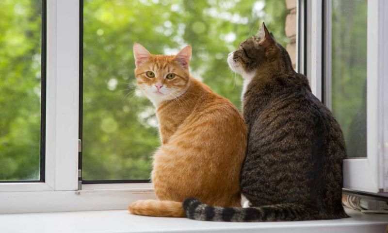
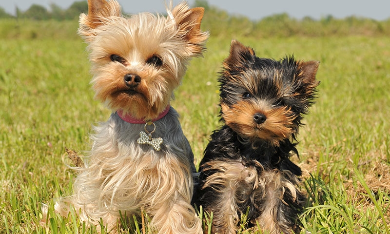

ONG Adopta un perro y un gato
Perritos y gatitos en las calles
es una organización sin fines de lucro, compuesta por un equipo multidisciplinario de profesionales.
Esta organización nace a fines del año 2016, como una respuesta a la problemática chilena en cuanto a la situación de abandono de animales en el paí.
Movidos por la necesidad de disminuir la población flotante de animales de compañía abandonados en las calles,
constatamos que esta situación de abandono responde a la falta de educación ciudadana en esta materia y a prácticas y costumbres de manejo animal que se mantienen
, equivocadamente, a lo largo de los años, incidiendo negativamente en la dinámica relacional entre los seres humanos y el resto de los animales.
Si me dejas solo no me como tu sillon

Gatitos para ti
No hay duda de ello, los gatos son grandes mascotas. Después de todo, ¿qué hay mejor que volver a casa al final de un duro día y escuchar el ronroneo de satisfacción de una adorable bola de pelo?
Los estudios demuestran que las personas con animales de compañía suelen estar más sanas y felices que aquellas que no los tienen, pero recuerda que tener un gato es una gran
responsabilidad y un compromiso de por vida. Conocelos aqui
Soy el mejor amigo que podras tener

Perritos para ti
En la mayoría de los casos, adoptar significa darle una segunda oportunidad a un animal que ha sufrido un proceso de abandono, y en ocasiones maltrato.
Acogerlo en tu casa de por vida y darle la estabilidad, los cuidados y el cariño que necesita va a ayudarlo a que recupere su confianza y su autoestima.
A cambio, la recompensa que vas a obtener es infinita. Aunque algunos de los perros que han pasado por estos procesos pueden ser temerosos o asustadizos,
su capacidad de agradecimiento a medida que se habitúen a tu familia o a ti llenará de felicidad vuestro día a día, porque adoptar un perro contribuirá a que generéis un vínculo de amor mutuo e incondicional.
Conocelos aqui